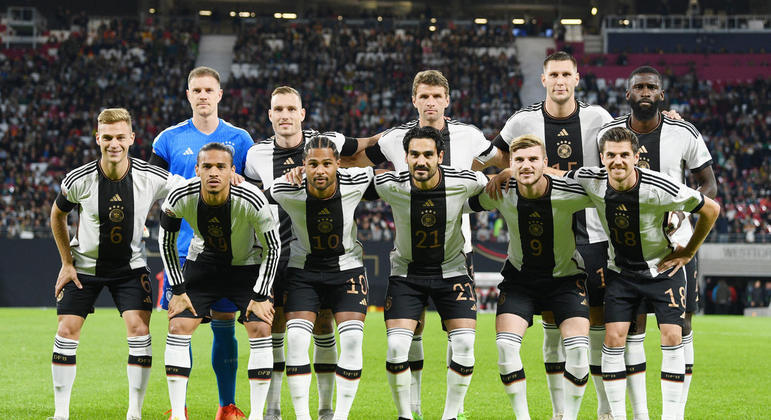
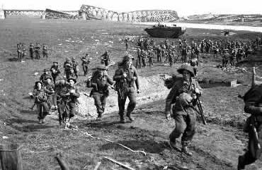
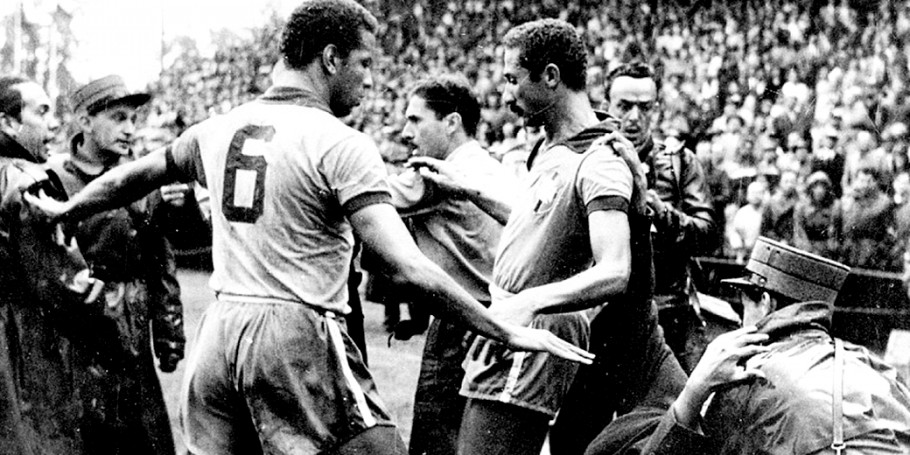

Alemanha
Alemanha é um país europeu conhecido por sua grande força econômica, sendo o país mais rico do continente e com grande protagonismo político na União Europeia. É o país mais populoso (sem contar a Rússia) e rico da Europa, tendo grande relevância nas decisões regionais e mundiais nos mais variados níveis: política, economia, aspectos sociais, entre outros. A língua fala neste país é o alemão.
Período da segunda guerra mundial
A Seleção Alemã foi fortemente marcada pela política integrada à Alemanha Nazista. Jogadores austríacos de destaque passaram a jogar pela Seleção Alemã, enquanto a equipe Austríaca foi extinta momentaneamente. Seis austríacos foram convocados para defender a Alemanha no mundial, que também utilizou a suástica no uniforme. Após a guerra, a Alemanha foi dividida e a Áustria voltou a ser um país independente e sua Seleção foi retomada; em 1949, foram criadas as Alemanha Ocidental e Alemanha Oriental independente no futebol, cada uma possuindo também sua seleção, que chegou a disputar as Eliminatórias para a Copa do Mundo de 1954.
A Alemanha só passou a utilizar um uniforme reserva depois da II Guerra Mundial e a cor escolhida para essa camisa foi o verde, opção aparentemente inusitada.
Milagre de Berna
A Alemanha Ocidental, comandada por Fritz Walter, reuniu-se para disputar a Copa do Mundo de 1954. Na fase de grupos a Alemanha caiu com a favorita Seleção Húngara de Futebol comandada nessa época por Ferenc Puskás um dos melhores jogadores da história, que ao final deste jogo o placar foi de 8x3 para os húngaros. Porém, a Alemanha Ocidental jogaria contra a Hungria novamente na final, que estava invicta por 32 partidas consecutivas.
Em uma virada surpreendente, a Alemanha Ocidental ganhou por 3-2, com Helmut Rahn marcando o gol da vitória com apenas seis minutos restantes. A vitória inesperada criou uma sensação de euforia ao longo de uma Alemanha dividida no pós-guerra. O triunfo é creditado como tendo um papel significativo em assegurar o fundamento ideológico do pós-guerra da República Federal da Alemanha.